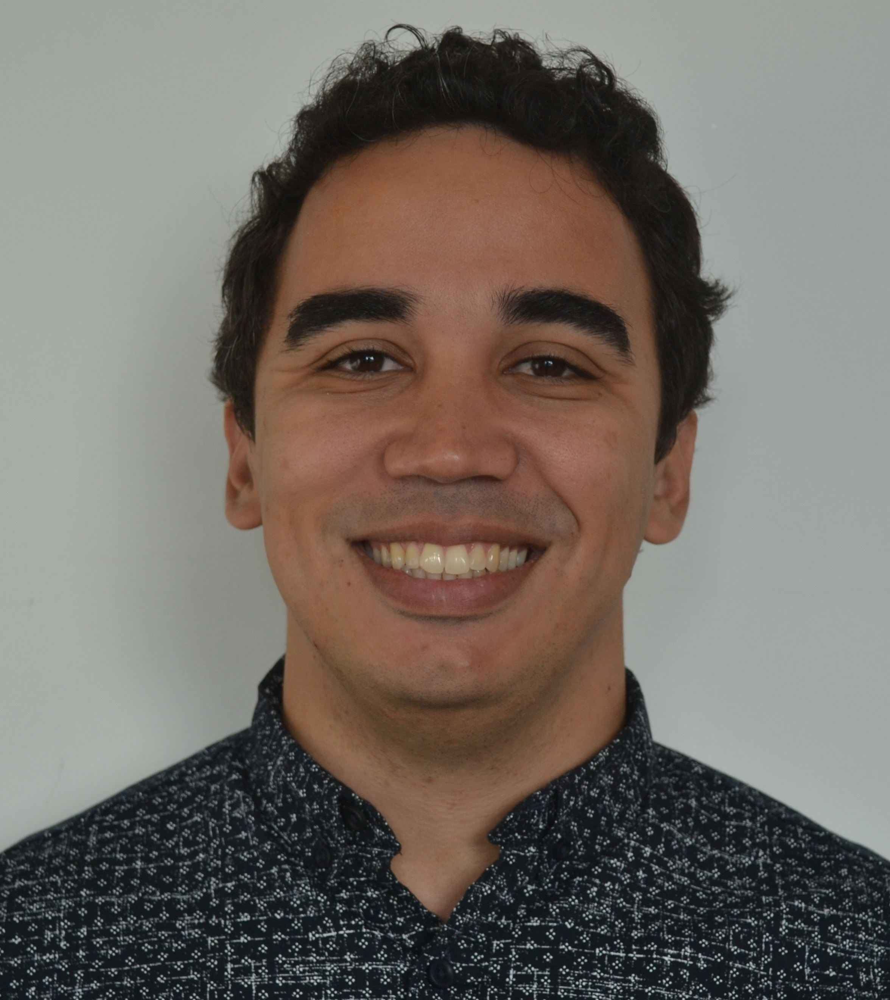

Dr. Bruno Andrade
 - Email
- Email - Twitter
- Twitter - Google Scholar
- Google Scholar - GitHub
- GitHub - Research Gate
- Research Gate
Description:
A Brazilian Scientist currently based in Cork, Ireland. I am originally a Biotechnologist with a Master’s degree and Ph.D. in Computational Biology. During my post-graduation, I witnessed the development of sequencing technology required for the explosion of microbiome data and started to work with environmental metagenomes at the very start of my scientific career. In 2015 I was granted an international joint-PhD fellowship to continue my work with bacterial genomics and public health at Utrecht University in Holland, my first international experience.
In 2017 I changed my research subject from Public Health to Biotechnology and started a post-doctoral fellowship sponsored by FAPESP to study the rumen and stool microbiomes of beef cattle and their influence on its phenotypes. The establishment of this research line was successful, allowing us to approve grants from different grant agencies and to publish several studies. In 2019 I was granted an international joint Post-doctoral fellowship to apply Machine learning approaches to analyze microbiome and cattle data at Munster Technological University, Ireland.
I am currently a Senior Researcher at Munster Technological University/AdaptCentre. My current project includes the study of the stool microbiome diversity of the USA Angus breed, reconstructing Metagenome Assembled Genomes (MAGs), bacterial genes and functions, and their relationship with complex phenotypes. I am also involved in different international projects, including the influence of the nasopharyngeal microbiome in the severity of COVID-19.